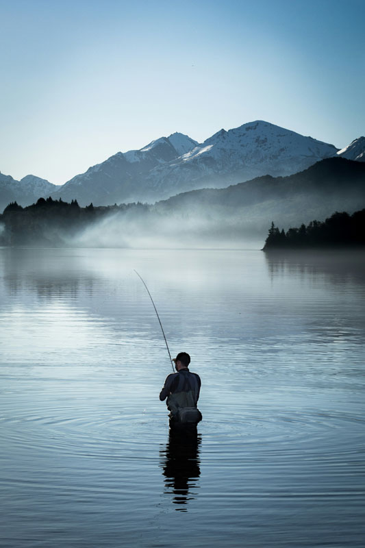

River Tours at Elder Glen National Park
“Follow the Current. But Never Alone.”
Elder Glen’s waterways are as breathtaking as they are mysterious. Whether you’re looking for a peaceful paddle through misty wetlands or an adventurous journey down the park’s most secluded river, our guided tours offer an unforgettable experience.
But remember: Water always remembers. Water always returns.
River Tour Options
The Silver Veil Paddle (Beginner – 2 hours, Calm Waters)
- A gentle kayak or canoe journey through the fog-laden Silver Veil River.
- Spot rare birds, bioluminescent algae, and fish that don’t match known species records.
- If the fog gets too thick, follow your guide’s voice. Not any other voice.
Traveler’s Tip: If your paddle feels heavier all of a sudden, do not look into the water. Just keep moving.
The Hollow Current Excursion (Moderate – 3 hours, Slight Rapids)
- Travel deeper into Elder Glen’s river system, where the waters run colder than they should.
- Pass by the ruins of an old trading outpost, abandoned under unclear circumstances.
- Some say the water carries whispers—but it’s probably just the current.
Traveler’s Tip: If your reflection looks delayed, do not stare too long. It may notice.
The Black Eddy Descent (Advanced – 4 hours, Strong Currents)
- Navigate the fast-moving waters of Black Eddy, a section of the river staff refuse to discuss.
- Occasionally, the water appears deeper than possible—even in areas only a few feet deep.
- Some paddlers report seeing shapes beneath their boats. The park assures visitors this is just a trick of the light.
Traveler’s Tip: If you feel something brush your paddle, do not stop. The river sometimes tests those who enter.
The Stillwater Drift (Night Tour – 2 hours, Limited Availability)
- A silent, moonlit boat ride through the park’s darkest and stillest waters.
- Guides will instruct guests to “listen, but not respond” to any sounds.
- If you hear your own voice calling from the shore, ignore it.
Traveler’s Tip: If the stars begin to reflect incorrectly in the water, close your eyes until the guide says it’s safe.
The Sunken Chapel Expedition (Special Tour – Length Unknown)
- A limited-time deep water excursion exploring the rumored location of an old chapel that vanished in 1846.
- Some say the church bell still rings underwater on certain nights.
- No known records exist of previous expeditions—but we’re sure this one will go better.
Traveler’s Tip: If you hear singing from beneath the water, do not lean over the edge.
Safety Guidelines & Rules
- Wear your life jacket. – If it loosens on its own, tighten it quickly.
- Stay with your group. – If someone falls behind, they must catch up on their own.
- Do not reach into the water. – You may find something grabbing back.
- If your guide stops paddling and stares at the water, do the same. – Wait. Do not ask why.
- If you see a second boat shadowing yours, do not acknowledge it. – There is only one tour scheduled at a time.
Fishing at Elder Glen National Park
“Some Catches Should Be Released.”
Elder Glen’s rivers and lakes offer pristine fishing opportunities for anglers of all experience levels...
Prime Fishing Locations
Veilwood Lake (Beginner-Friendly, Dock & Shore Fishing Available)
- Home to trout, bass, and many other aquatic species
- The water is oddly still in the early morning hours.
- Fishermen report seeing pale hands just beneath the surface.
Fishing Tip: If your bobber moves in perfect circles, cut your line and move to a new spot.
Hollow Glen River (Experienced Anglers, Deep Water)
- Home to the elusive “Hollow Glen Trout,” a species only found in this section of the river.
- A local legend claims that a massive, unseen fish has been circling these waters for over a century.
- Occasionally, fish will be caught with no eyes. This is normal.
Fishing Tip: If your catch has skin instead of scales, toss it back immediately.
The Black Eddy Depths (Caution Advised – Only for the Brave)
- No official records exist of successful fishing trips here, yet some anglers insist they’ve seen movement.
- Some claim the water resists being disturbed.
- Fishing lines have been pulled into the water with unusual force...
Fishing Tip: If something tugs three times on your line but doesn’t break the surface, let go.
